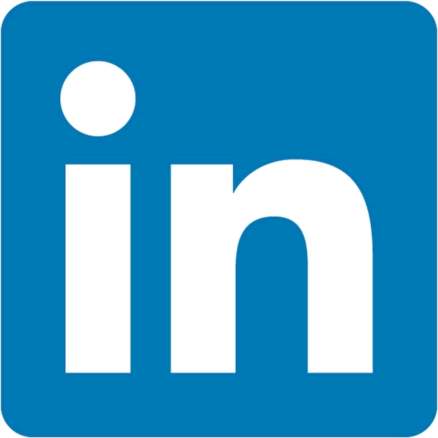

Zach Bolan
Curriculum Vitae
Updated: April 2024
Hey, I’m Zach Bolan. My resume has the abbreviated version. This is the longer-form as I don’t believe two pages of bullet points can properly sum up who I am or how I work. If you're looking for a little more narrative then hopefully you find this to be helpful!
Are you working on something AMBITIOUS and interested in working with me? Feel free to say hello! ⇲
About Me
I‚Äôm a Tech-Lead experienced fullstack Web software engineer based out of Venice, California, just a few blocks from the Breakwater üèÑü誂Äç‚ôÇÔ∏è. My modus operandi is working at a higher level of abstraction; leading, mentoring, and challenging others, while jumping into the most difficult challenges when needed. The problems that I'm enjoying solving revolve around Teams, Culture, and Scale. I empower my engineering team:
- To continuously imporove themselves, both personally and professionally
- To architect systems and drive innovation that directly bring value to our users
- To have fun. Life is too short not to enjoy what we're doing
I’m currently spending a significant amount of my energy and time launching HERDBUY ⇲ - an E-commerce website, with a twist, that gives power back to the buyer. This is as close to a startup from a garage as it gets, with a few college friends trying to build something cool (we’re all remote, renting physical garages in California is expensive!). As the founding and lead engineer, I’ve bootstrapped the majority of the app and am responsible for every significant technical decision. While definitely a grind, it’s honestly been refreshing to be laser focused on the product and trying to invent something that brings value to buyers and sellers. We’re on track to launch by the end of April 2024 so stay tuned!
Other Interests üëæ ü§ñ ‚ôªÔ∏è
I have nearly nine years experience in full-stack web development. However, more recently, I’ve been enjoying moving from this domain and getting “closer to the metal” by doing a little more systems engineering with C++ and Rust. I’ve always been creative (I was originally a Fine Arts major) which has led me to build a simulation/game engine from scratch. This may never amount to much, but it’s really more of “about the friends you made along the way” kind of project.
Like any self respecting software engineer these days, I’ve also been dabbling in AI. At present, I’m passionate about seeing how we can leverage these tools, like my simulation engine, and pair it with generative AI to empower creatives. I believe there is enormous opportunity in closing the gap between ideation and concept, to a tangible piece of work.
And lastly, I care deeply about our environment and the future of our planet. I believe mitigating a climate crisis is one the most pressing issue of our time. While finding, adoptiong, and transitioning to cleaner and renewable sources of energy is a major component, it's a multi-faceted challenge as solutions will need to come in many forms - technical, policy, and behavioral. I'm currently exploring opportunities for how I can use my skills to attack the issue and be a part of the solution.
Education
JAMES MADISON UNIVERSITY
May 2015
- B.S. in Media Arts and Design
- Minored in Computer Science
Work
Take a ride through my career and see not just what I've worked on and the tech, but the impact I made.
 RESEARCH INNOVATIONS
July 2015 — Nov 2018
RESEARCH INNOVATIONS
July 2015 — Nov 2018
RESEARCH INNOVATIONS
Learning the basics of not just software engineering, but learning how I work effectively.
I started my career off in Washington DC as a full-stack engineer at Research Innovations. I made a lot of mistakes, and then made some more. This is where I was first introduced to frontend frameworks and consequently built a lot in AngularJS and then React.
Being such a small company, I had the advantage of being involved in many decisions and really learned how software systems are built. Some key highlights:
- Introduced modern tooling to the UI codebase, such as ES2015
- Built the UIs and APIs for complex networked graph and time series visualizations
- Helped migrate the legacy system to React by building the underlying component framework
By the time I moved on to my next role I was leading some small teams and projects, giving me a taste for what would come later.

LINKEDIN
Dec 2018 — Aug 2021
Learning software engineering at scale - how the big dogs work.
For my next play I was looking to really challenge myself and take things to the next level - and that's how I ended up at LinkedIn, largely as a frontend engineer. I was on a high-performing team building out Talent Insights, and then eventually moving over to work on various Recruiter features.
I onboarded my team onto LinkedIn’s notification system, a multi-quarter effort of designing and implementation that had me working with multiple different teams across the entire tech stack from Ember, Java, HDFS, and Kafka. The infrastructure I built was in support of a machine learning anomoly detection engine that surfaces important events, such as when a company experiences layoffs. My work was the template for the team and allowed future notifications and alerts to be iterated on quickly. Additionally, I:
- Built the APIs that consumed anomaly events and the UIs to display them in-app
- Evangelized migrating to Octane and advocated for modern practices by putting them into practice. We were one of the first teams at LinkedIn to release customer facing products using the new framework
- Designed a shareable read-only view of Talent Insights
- Built some of the first underlying React components for Recruiter. These components represented the core building blocks, such as buttons, icons, lists, etc. that would be used by future React apps
Above all, my experience at LinkedIn taught me about scale. I'm not just talking about building systems for millions of users, but how to design systems and write code for an audience of hundreds of Engineers. And even more importantly, I learned how to effectively communicate, work with, and get buy in from these hundereds of Engineers, Designers, and Product Managers, all across the globe.
 VIDEOAMP
Sep 2021 — Present
VIDEOAMP
Sep 2021 — Present
VIDEOAMP
Taking control of the helm.
Currently, I sit as a Principal Software Engineer at VideoAmp. I am the Typescript Node subject matter expert, though I've worked extensively across the tech stack with React, Go, Postgres and Kafka.
As a Senior Software Engineer
I successfully evangelized and then led the effort to re-architect Node microservices to meet the increase in load and quality expectations on the systems
- Led and mentored a team that grew from four engineers to over a dozen
- Designed and built a new Node API that introduced stronger typings, a tighter architecture, and model validation
- Gave frequent talks to promote best practices and advocate for Typescript APIs
The new system was delivered with zero downtime to users and we appraoched zero runtime alerts in the service when deployed. Shortly after, I was a Tech Lead on a separate project for measuring YouTube that was to be built on top of the new system. Again the team was able to move fast and deliver with no user-facing issues - proof that the new services were a success.
As a Principal Software Engineer
I took the learnings from those APIs and built new services which onboarded Typescript into the organization's Bazel build system, where I focused on creating the best developer experience imaginable. Meanwhile, this effort was really ancillary - I was leading a team to design and launch a report templating engine that would need to be built using these new tools. In three months I achieved both:
- Typescript became a first-class supported programming language where I integrated GRPC, static database types, model validation, and integrated into the release pipelines
- The engine was released on these new tools
More recently, I've been a Tech Lead for a team of six engineers where I was responsible for all Scrum ceremonies, architecture, scoping, and project planning. My day was largely spent mentoring and unblocking the team through relentlessly improving processes, and I mostly got my hands dirty on the most difficult technical problems and designs.
This has been the most rewarding period of my career thus far. It's addictive to witness the team learn and grow, and I'm satisfied with how the decisions I make are impacting the engineering organization as a whole.
As of late, I've been looking into how the company can adopt HTMX and OpenAPI tooling to power a Developer Portal for external API consumers. This includes pushsing for the entire company to adpot RESTful API stadnards, defining our API lifecycle, and advocating for API Evolution.